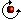
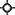
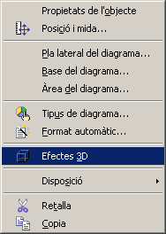

UF4. Fulls de càlcul
G rapida - d3d
Diagrames en 3D
La representació de diagrames en 3 dimensions, fa més atractiva la representació de l'àrea de dades del full. A banda de les opcions dels diagrames en 2 dimensions (vegeu Formatació dels diagrames), aquests presenten la possibilitat de girar-los per poder mostrar millor certes zones del diagrama o modificar algunes de les característiques 3D del gràfic
Girar un diagrama 3D
- Assegureu-vos que el diagrama està seleccionat i esteu en la modalitat de formatació (feu clic en qualsevol cel·la del full i, tot seguit, feu doble clic sobre el diagrama). El diagrama ha d'estar envoltat d'una franja de color gris amb 8 punts de control
- Feu clic sobre l'àrea del diagrama. Apareixeran 8 punts de control de color vermell i un punt central que indica el centre de gir.
- Els quatre punts vermells de les cantonades permeten girar el gràfic respecte del centre de gir
- Situeu el punter del ratolí sobre el control (el punter es mostrarà )
- Premeu el botó d'acció del ratolí i, sense deixar-lo anar, moveu-lo en el sentit de les agulles del rellotge o en sentit contrari fins situar el gràfic en la posició desitjada (les línies discontínues indiquen la posició que ocuparà)
- Els quatre punts vermells de les parts centrals, permeten girar el gràfic respecte d'un eix vertical o horitzontal que passaria pel centre de gir.
- El centre de gir  es pot canviar de posició arrossegant-lo amb el ratolí. La nova posició afectarà als girs que s'efectuïn manipulant els controls vermells.
Efectes 3D
Si feu clic, amb el botó dret, sobre l'àrea del gràfic, tindreu, entre d'altres, accés a l'opció Efectes 3D

que permet modificar característiques de Geometria, Ombreig, Il·luminació, Textures i Material amb els quals podreu donar un aspecte més vistós al diagrama


|
|

|
|
|